Neogene Epoch
|
|||||||||
|---|---|---|---|---|---|---|---|---|---|
| Aquitanian (23–20 Ma) | Burdigalian (20–16 Ma) | Langhian (15–13 Ma) | Serravallian (13–11 Ma) | Tortonian (11–7 Ma) | Messinian (7–5 Ma) | Zanclean (5–3 Ma) | Piacenzian (3–2 Ma) | ||
| Europe | Number of observations | 192 | 1,018 | 1,124 | 1,075 | 1,752 | 1,536 | 207 | 856 |
| Number of species | 73 | 161 | 174 | 199 | 400 | 293 | 103 | 183 | |
| Number of genera | 50 | 87 | 94 | 124 | 198 | 139 | 68 | 98 | |
| Number of locations | 45 | 203 | 170 | 225 | 381 | 207 | 46 | 130 | |
| Genera per location | 1.11 | 0.43 | 0.55 | 0.55 | 0.52 | 0.67 | 1.48 | 0.75 | |
| North America | Number of observations | 177 | 524 | 440 | 826 | 373 | 495 | 231 | 240 |
| Number of species | 106 | 191 | 169 | 231 | 146 | 147 | 73 | 71 | |
| Number of genera | 62 | 105 | 89 | 104 | 83 | 88 | 51 | 46 | |
| Number of locations | 31 | 83 | 45 | 95 | 56 | 70 | 43 | 53 | |
| Genera per location | 2.00 | 1.26 | 1.97 | 1.09 | 1.48 | 1.25 | 1.18 | 0.86 | |
Appendix C — Climate change drove the deep-time assembly of biodiversity
C.1 Fossil data
C.1.0.1 Assigning fossil locations to a period in the Neogene
Fossil occurrences were assigned to discrete Neogene stages based on the midpoint of their reported geological age ranges (Ma). Midpoint ages were intersected with the standard Neogene chronostratigraphic framework (Aquitanian–Piacenzian). Midpoint ages within a single stage were assigned directly to that stage. This discretization facilitates stage-level comparisons while acknowledging that fossil ages are inherently uncertain.

C.1.0.2 Evaluating sampling effort
Sampling effort was evaluated as the relationship between the number of sampled fossil localities and observed generic richness for every stage in the Neogene. Sampling–richness relationships were examined within each Neogene stage to assess how efficiently additional localities contributed to the recovery of new genera and to identify stages showing evidence of saturation versus continued sampling dependence.
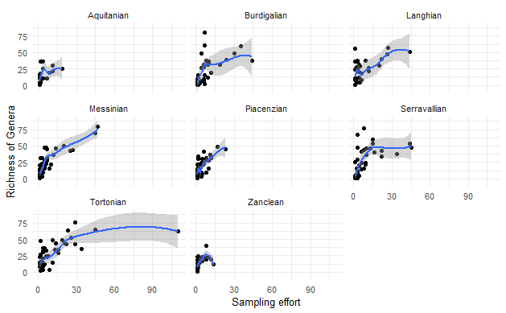
C.1.0.3 Richness estimates
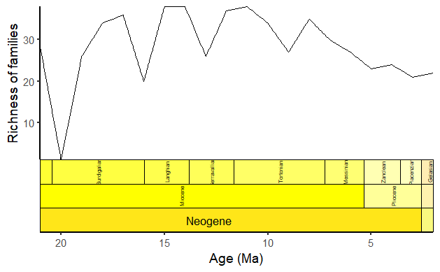


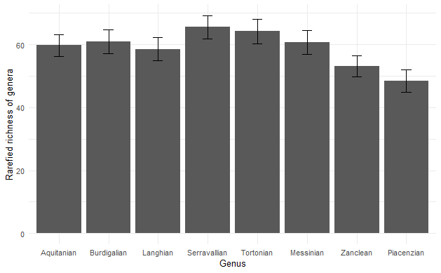
C.1.1 Spatial binning
C.1.1.1 Paleoreotation of fossil coordinates
Present-day geographic coordinates of fossil localities were converted to paleogeographic coordinates using plate tectonic rotation models to relocate fossil occurrences to their estimated positions at the time of deposition, based on their assigned geological ages (midpoint estimates). Paleorotation was performed independently for each fossil occurrence using its stage-level age assignment, ensuring temporal consistency between spatial location and geological period. The rotation model (MERDITH2021) accounts for large-scale plate motions through time and produces paleolongitude and paleolatitude estimates that are directly comparable across Neogene stages.
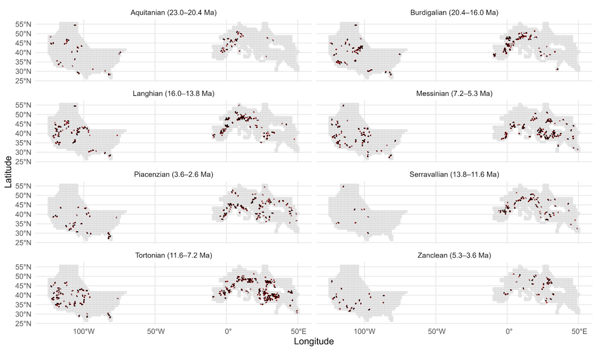
C.1.1.2 Grid aggregation of fossil data
Paleorotated coordinates were subsequently used to assign fossil occurrences to a discrete grid cells of approximately 100 × 100 km in paleogeographic space. Grid aggregation reduces the influence of uneven spatial sampling density and local clustering of fossil localities, while retaining sufficient spatial resolution to capture broad-scale paleobiogeographic structure. Fossil occurrences falling within the same grid cell and Neogene stage were grouped into a single paleoassemblage, which served as the fundamental unit for subsequent diversity, compositional, and network analyses.
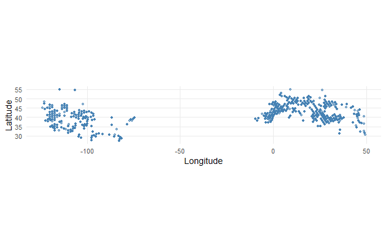
C.1.2 Taxonomic summary
C.2 Paleoclimatic data
C.2.1 Temporal binning of climatic rasters (1 Ma) within Neogene stages
Paleoclimate reconstructions were organized into discrete, stage-specific climate stacks by binning rasters at 1 Ma resolution within each Neogene stage (Aquitanian–Piacenzian). For each stage, we identified all paleoatmospheric temperature rasters whose time stamps fell within that stage’s chronostratigraphic boundaries and grouped them into a single multi-layer object (e.g., “Temp.1”, “Temp.2”, … in Fig. S3). This procedure preserves within-stage temporal information while ensuring that all climatic summaries are computed from time slices that are chronologically consistent with the fossil data assigned to that stage. Because stages differ in duration, the number of 1 Ma rasters per stage varies, reflecting the amount of temporal coverage available within each interval.
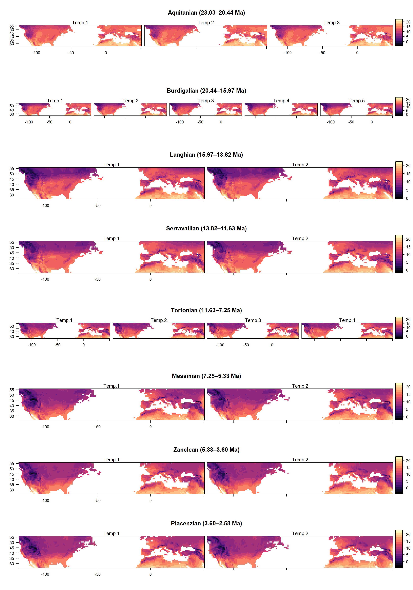
These stage-specific raster stacks were subsequently used to derive three complementary climatic descriptors for each grid cell: (i) the mean temperature across all 1 Ma slices within the stage (capturing average climatic conditions), (ii) the temporal slope of temperature through the stage (capturing directional change), and (iii) temporal instability, quantified as within-stage variability among 1 Ma slices (capturing fluctuations around the mean). These variables capture average conditions, directional climatic change, and within-stage variability, respectively, and together describe the climatic context experienced by fossil assemblages. Together, this temporal binning strategy allows climate to be summarized in a way that matches the temporal granularity of Neogene stages while retaining meaningful information on both climatic trends and variability within each stage.
C.2.1.1 Mean atmospheric temperature
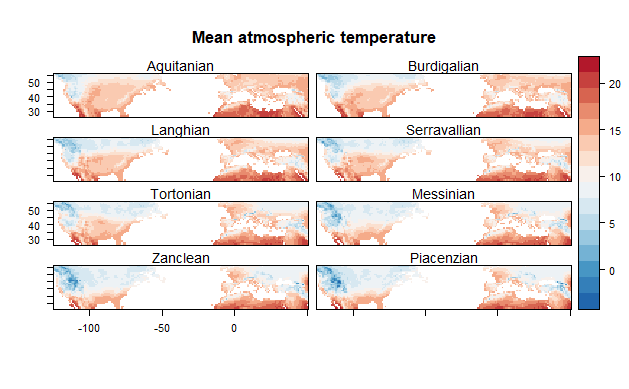
C.2.1.2 Temporal slope of atmospheric temperature (Magnitude & Direction Climate Change)
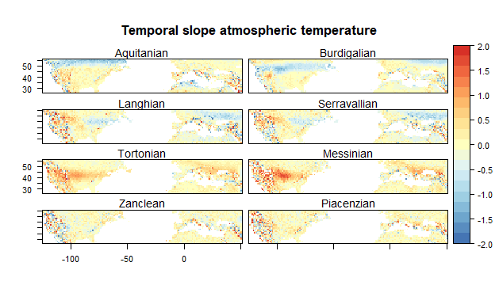
C.2.1.3 Temporal instability of atmospheric temperature
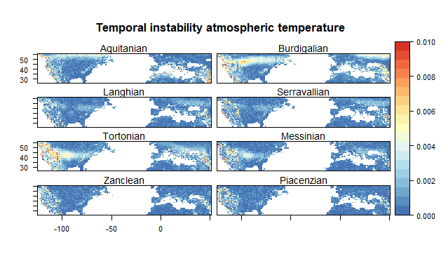
C.2.2 Delineating paleoclimatic zones
Paleoclimatic zones were delineated to identify spatially and temporally coherent units of climatic conditions across the Neogene. For each grid cell and Neogene stage, we summarized paleoclimate using three complementary descriptors derived from the 1 Ma–binned mean atmospheric temperature rasters. To reduce dimensionality and account for covariance among climatic descriptors, we applied principal component analysis (PCA) to the standardized climate variables across all grid cells and stages. The leading principal components, which captured the majority of climatic variation, were retained and used as inputs for clustering.


Paleoclimatic zones were then defined using k-means clustering in this reduced climatic space, grouping grid cells with similar climatic histories across space and time. The optimal number of clusters was selected based on the Calinski–Harabasz criterion, balancing within-cluster homogeneity and between-cluster separation.

Resulting clusters represent climatic spatiotemporal zones that integrate both geographic structure and temporal climatic dynamics. Each grid cell–stage combination was assigned to a climatic spatiotemporal zone. This grouping captures shared climatic histories and provides a way to account for spatial autocorrelation, given that nearby grid cells tend to exhibit similar climatic trajectories through time.
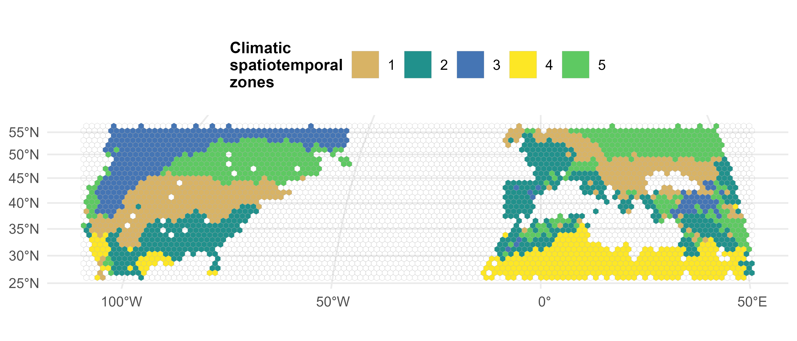
C.3 Evaluating fossil dissimilarity
Compositional dissimilarity among fossil assemblages was quantified to characterize spatial and temporal variation in taxonomic composition across the Neogene. For each pair of paleoassemblages, we calculated taxonomic dissimilarity using presence–absence data at the genus level. Assemblages were defined as unique combinations of spatial grid cells and Neogene stages, ensuring that dissimilarity comparisons reflected both spatial and temporal separation.
We used the Simpson dissimilarity index (β_SIM) to quantify compositional turnover between assemblages. β_SIM emphasizes taxon replacement while minimizing the influence of differences in richness, making it well suited for fossil data where sampling intensity varies among assemblages.

The nestedness-resultant component (β_SNE), reflects turnover-driven differences from those arising through nested subsets of taxa and can be more sensitive to differences in sampling completeness. We don’t consider (β_SNE) in our subsequent analyses.
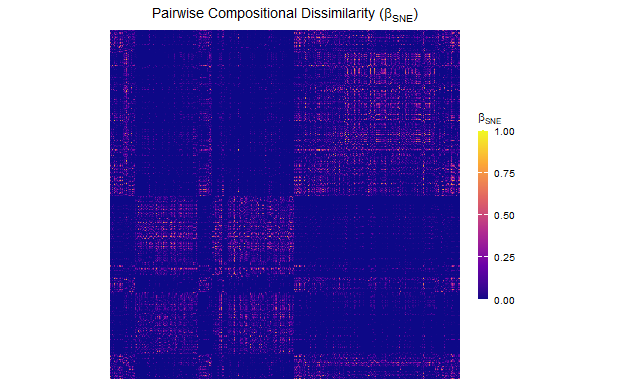
We used multidimensional ordination (NMDS) to visualize major gradients in paleoassemblage composition.
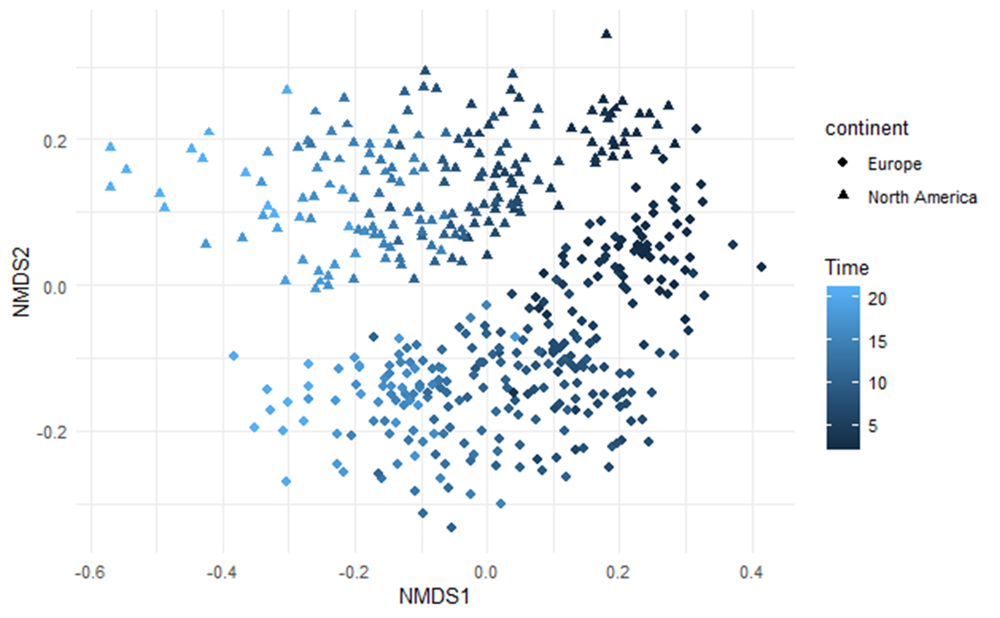
C.4 Delineating paleobiogeographic regions
We evaluated model fitting across increasing numbers of latent groups in the stochastic block model, summarized using the geometric mean of the numbers of row (Q₁) and column (Q₂) groups. ICL balances model fit and complexity by penalizing overparameterization, with higher values indicating better-supported partitions. The observed plateau in ICL values indicates stabilization of model support with increasing numbers of groups, beyond which additional complexity yields little improvement in explanatory power.
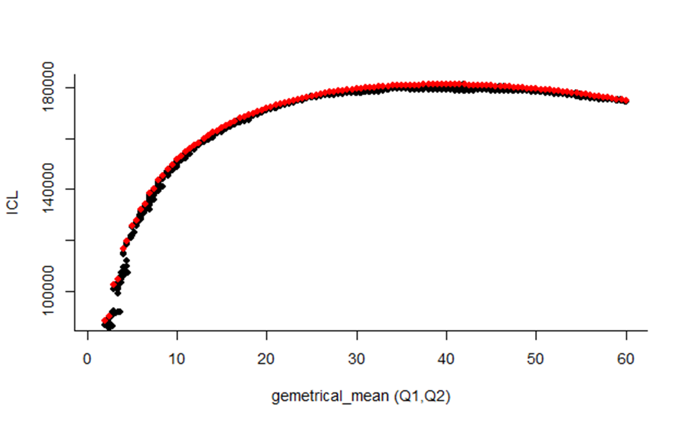
Geographic and temporal distance covariates were included to account for spatial and temporal autocorrelation among paleoassemblages.

To reveal large-scale structure, rows and columns of the dissimilarity matrix are reordered according to the inferred grouping of paleoassemblages obtained from SBM. This reordering does not alter dissimilarity values but makes coherent patterns of similarity and dissimilarity visually explicit.

C.4.0.1 Spatio temporal distribution of paleobiogeographic regions

C.5 Evaluating the relationship between turnover and climate
C.5.1 Spatial join between climatic variables with fossil localities
For each paleoassemblage, climatic values were extracted from the raster cell corresponding to the assemblage’s grid cell centroid.
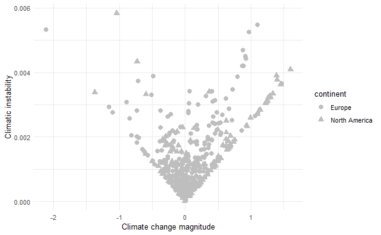
C.5.2 Subset the dissimilarity matrix
To quantify compositional turnover within climatic spatiotemporal zones, we subset the global paleoassemblage dissimilarity matrix according to climatic cluster membership and time region. The full matrix contains pairwise Simpson dissimilarity (β_SIM) values between all paleoassemblages. For each climatic cluster and Neogene stage (or time region), we extracted the submatrix corresponding only to paleoassemblages belonging to that cluster–time combination.
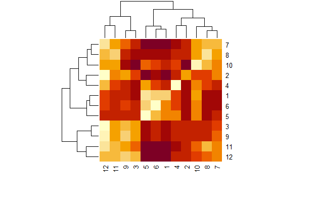
C.5.2.1 Extract the diagonal of the matrix subset and get its mean
To summarize within-zone compositional turnover quantitatively, we extracted the diagonal of each subset matrix and calculated its mean. This mean dissimilarity represents the average compositional turnover among paleoassemblages within a given climatic spatiotemporal zone. These values provide a standardized measure of internal turnover that can be compared across zones and through time.
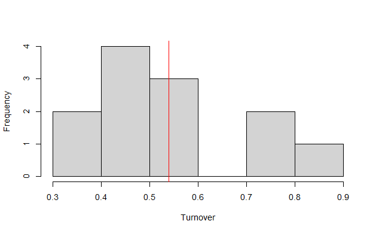
C.5.3 Repeat for all climatic clusters across all time bins
We repeated the procedure for all climatic spatiotemporal zone and Neogene stage combinations. In addition to mean, we calculated the standard deviation to capture the variance.
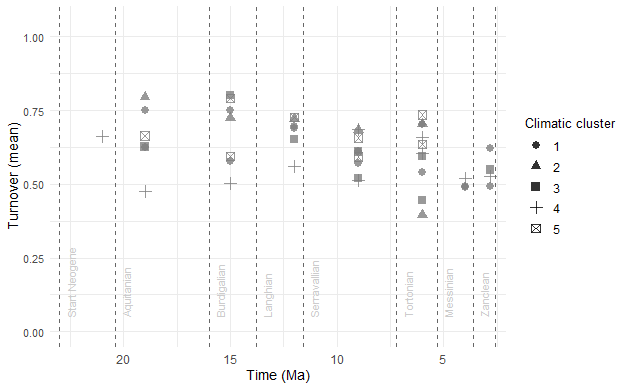
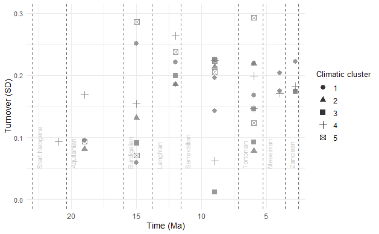
C.5.4 Beta-regression modelling
The beta regression model is fitted with a logit link and that for our project answers the following question.
How does mean turnover (bounded 0–1) respond to the magnitude of atmospheric temperature change, its direction (warming vs cooling), and instability, and do these relationships differ by continent?
C.5.4.1 Beta regression model diagnosis
Model adequacy was evaluated using standardized weighted residuals. Residuals were plotted against fitted values to assess potential deviations from model assumptions. The absence of systematic patterns or trends and the approximately symmetric distribution of residuals around zero indicate an adequate model fit and no strong evidence of heteroscedasticity or misspecification on the response scale.
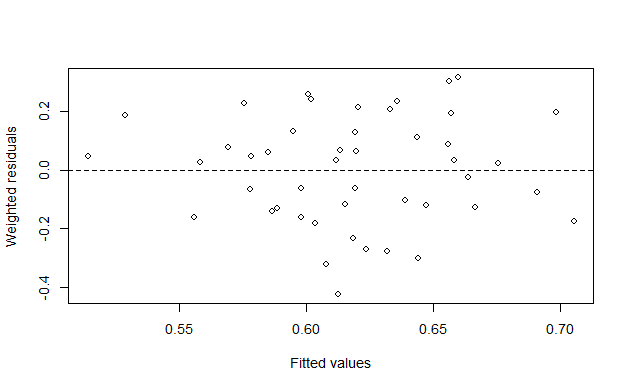
C.5.4.2 Beta regression model predictions
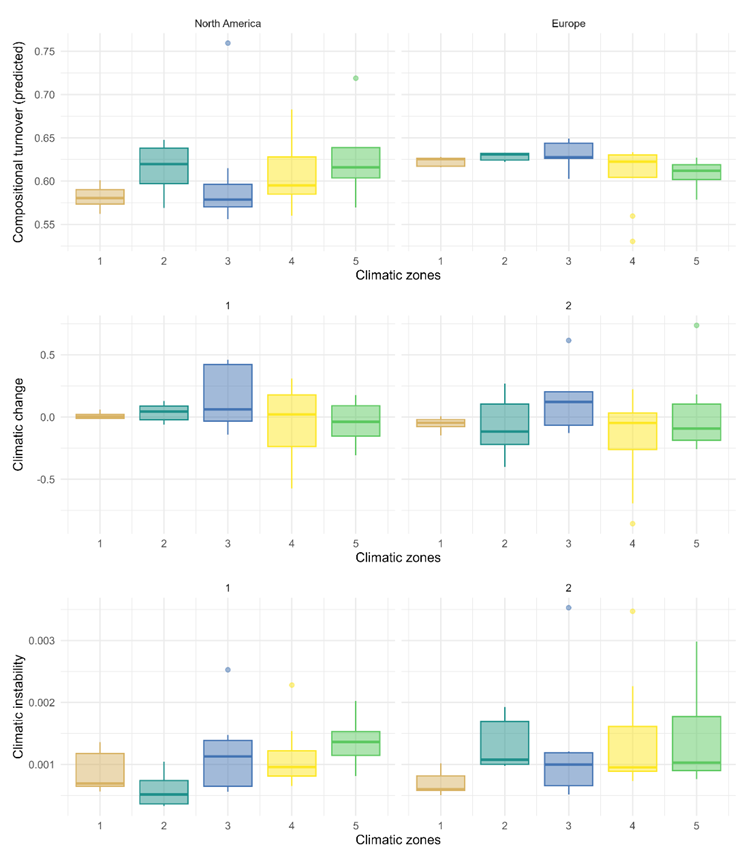